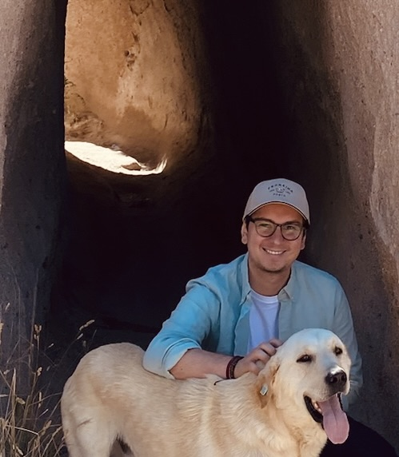

I am a PhD student at UC San Diego, focusing on development and environmental economics. I am interested in strengthening social protection systems to help vulnerable populations adapt to climate change.
Before my PhD, I worked as a Research Fellow in the Research Department at the Inter-American Development Bank, as a consultant for the World Bank's Poverty and Inequality Platform, and as a Research Assistant at Universidad del Rosario and the Central Bank of Colombia.
I hold an M.A. in Economics from Universidad del Rosario and a B.A. in Economics from Universidad Nacional de Colombia.
Feel free to reach me at dlvargas[at]ucsd.edu